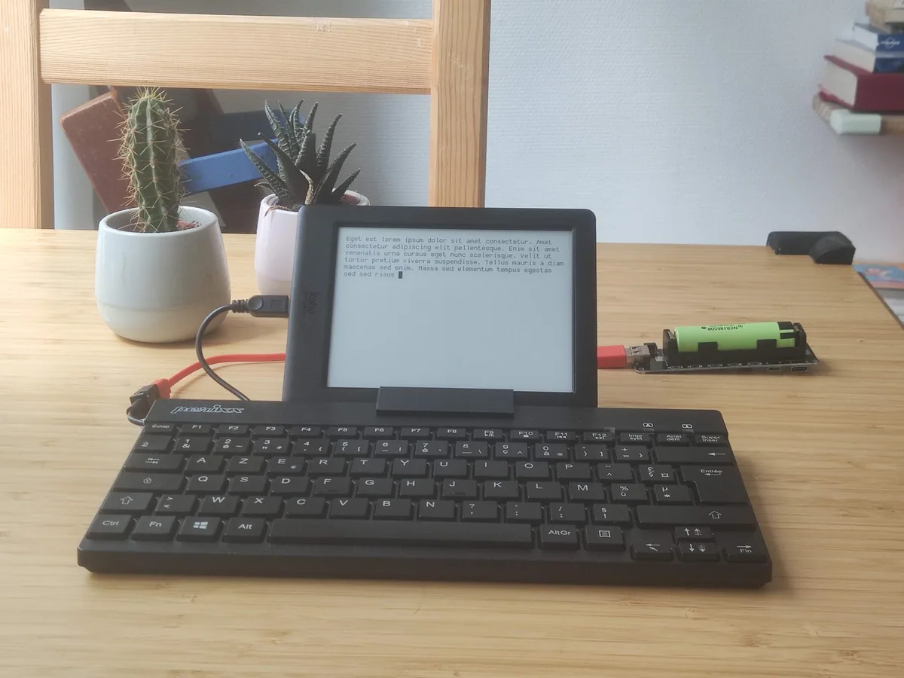

kobowriter
- A simple typewriter application written in Go for Kobo e-readers.

- 4/5 dimensions have verifiable sources
- Only dimensions backed by verifiable sources are included; unevidenced dimensions remain null rather than receiving a neutral placeholder.
Candidate route
- Candidate use Evaluate an older Kobo as a low-distraction text-entry terminal.
- Hardware scope Kobo e-readers; exact models, keyboard input methods, and firmware prerequisites were not checked.
- What is known A simple typewriter application written in Go for Kobo e-readers.
- GitHub A simple typewriter written in go for KOBO e-readers
- Evidence note E0 discovery candidate; descriptions are based only on GitHub repository metadata. Exact-device compatibility, installation outcomes, recovery paths, and long-term stability were not independently verified.
- Review record PS-kobowriter · 2026-10-23T16:55:18Z
Cost evidence
- Used-price range No reliable source
- Modification cost No reliable source
Before you start
- Do not flash, disassemble, or buy parts without installation and recovery material for the exact model, hardware revision, and firmware.
Repository snapshot
- Archived No; not archived when checked
- Last push 2024-01-20T16:37:18Z
- Default branch main
- API license identifier NOASSERTION
- The license snapshot does not automatically cover firmware, models, images, trademarks, or third-party components; a recent push does not prove compatibility.